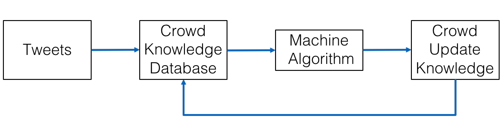
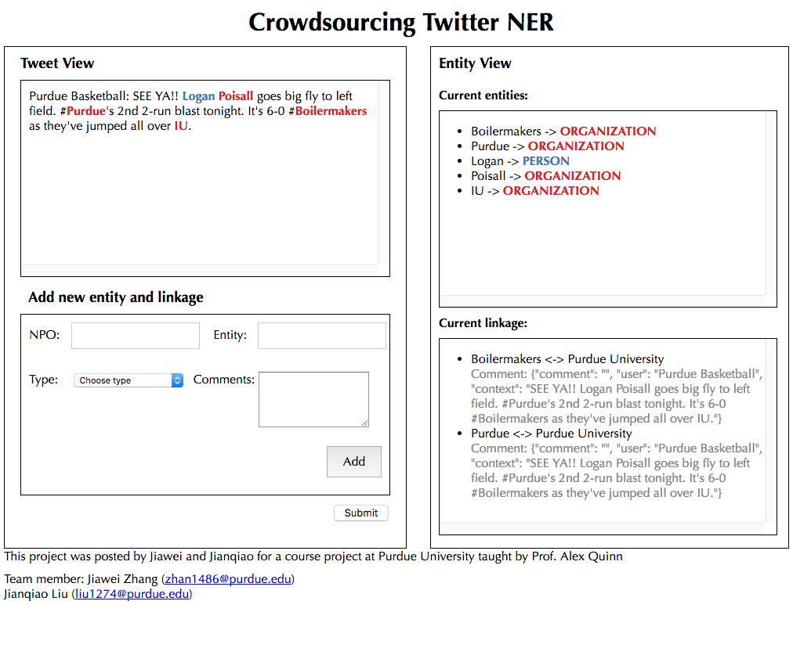
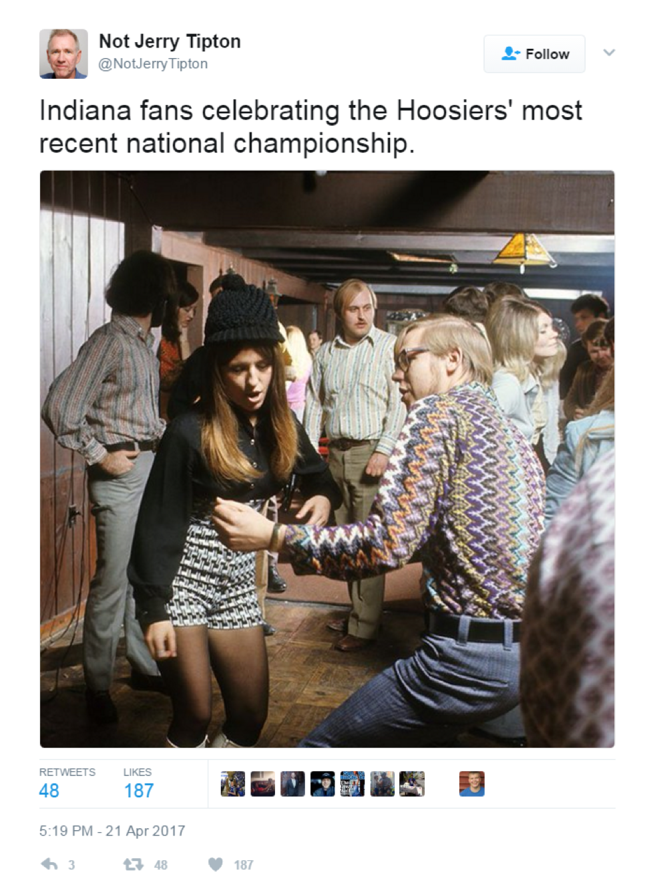
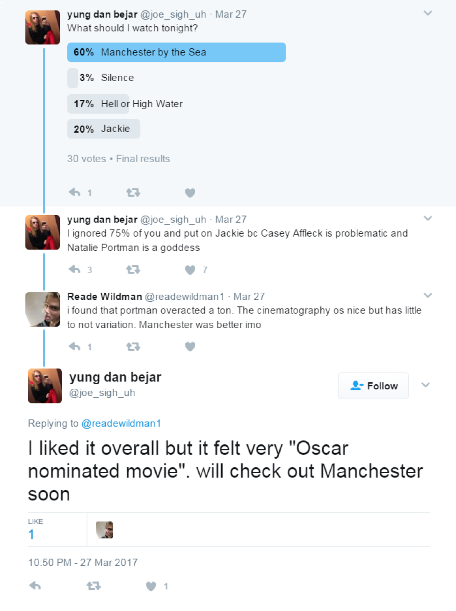
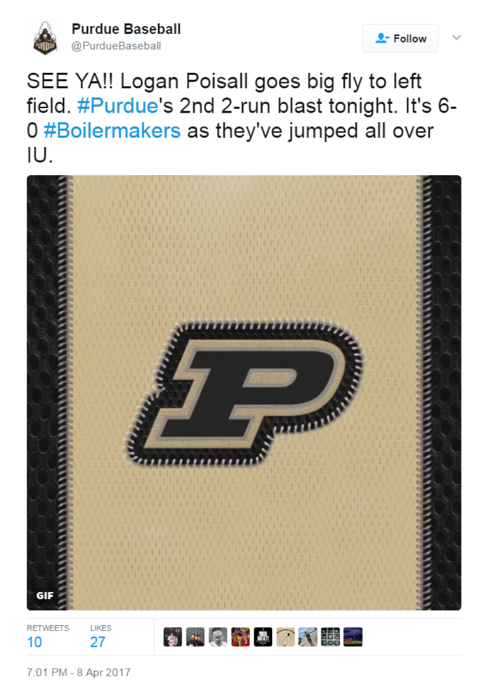

Fig 4. Daenerys Targaryen
This is a course project at Purdue University taught by Prof.Alex Quinn.
A named-Entity is a term or a phrase that identifies a real-world object. Typical examples include names of person, organization, location, brand, etc. Named-Entity Recognition has long been a key issue in text mining and natural language processing fields. While existing approaches are proved to be effective in standard text such as published articles and news media, their performance severely degrades on social media text such as tweets, where people tend to use informal grammar and obscure words. To this end, we introduce a crowdsourcing approach toward effective named-entity recognition on tweets. Our approach primarily focuses on entities that are dependent on the contextual information of the tweet or the conversation, as these entities vary across context and are challenging for conventional techniques. Our approach utilizes the automatic linguistic tools to pre-process tweets and extract potential named-entities, and then involves the workers to verify and disambiguate the automatically-generated results through an intelligent visual interactive interface. In the rest of this blog, we discuss related work in terms both automatic and crowdsourcing aspects, describe our techniques in details, and provide a system demo as well as preliminary results.
Named-Entity Recognition is one of the primary tasks in natural language processing field (NER). In general, NER extracts structured knowledge from the unstructured text, which can further be utilized as meaningful features for text mining and machine learning. NER-related research consists of two primary directions: the machine learning paradigm and the human-driven paradigm. In this section, we provide an overview of the two fields respectively.
The machine learning paradigm mainly consists of supervised approaches and unsupervised approaches. For supervised approaches, various learning models have been applied to tackle this challenge, examples of which include the Hidden Markov Models, Maximum Entropy, Support Vector Machine. The core methodology in this category is to define the named-entity recognition as a classification problem and aim to maximize the probability based on the training data. Hence, the quantity and quality of the training data influence the accuracy significantly. Since a robust and large training set requires a large amount of human effort, many text-mining tasks do not have a well-annotated corpus available. Hence, much research has been explored that utilized the unsupervised learning methods. Most unsupervised learning approaches are based on the assumption that for many named-entities, both the entity itself and the co-occurring context are consistent across multiple data instances, thus making it possible for the unsupervised algorithms such as data clustering to identify entity patterns. Compared to the supervised approach, the unsupervised learning approaches are proved to be effective in multiple languages and data sources.
While most of the above-mentioned approaches are oriented toward standard text such as news media or articles which use formal grammar and correct spelling. When applied to short text such as microblogs, their performance severely degrade. This is mainly because microblogs intensively use informal grammar, word abbreviation, and incorrect spelling. Named-entity recognition in such scenarios not only requires identifying which word or phrase is an entity, but also requires understanding the object the entity refers to according to the context in which it appears. To this end, research has been explored to utilize the knowledge from the crowds to perform NER tasks. Hence, a series of crowdsourcing-based approaches have been proposed. Most of the work in this domain purely relied on the user's annotation for entity recognition on text such as tweets. These systems have created user interfaces and asked the workers to identify which word or phrase is an entity and the corresponding entity type (Bontcheva et al., 2014, Finin et al., 2010). Moreover, the crowdsourcing methodology has also been deployed to the variants of NER tasks, such as matching entities that refer to the same object (Corleone), performing NER tasks on images or videos (Whang et al., 2013, Khan and Garcia-Molina, 2013), and applying NER on multiple data sources such as clinical natural language processing (Zhai et al., 2013). The limitation of the approaches that purely rely on the human is that it is very expensive (recruitment and payment to human labor) and slow (latency and working time) when working on a large corpus. Hence, CrowdER adopts a hybrid machine-human approach that aims to achieve high accuracy and good performance at the same time. This approach utilizes the automatic algorithm to perform an initial and coarse-grained processing of the dataset and asks the workers to perform a secondary pass only when the machine-generated results are not confident. Compared to the existing work, our approach primarily focuses on the named-entity that are ambiguous and need to be interpreted based on the contextual information in which the entity appears. We have also adopted a hybrid method that utilizes both the machine computation and human intelligence to more effectively recognize, disambiguate, and correlate entities in short text.
To address the obscure words problem, we expect a perfect natural language processing (NLP) algorithm that can automatically partition the sentences, extract the tokens, analyze the context and tag the tokens with necessary descriptions. However, in practice, we find that event the state-of-the-art natural language processing algorithms are far away from satisfactory. On one hand, NLP algorithms perform well at “word” level extraction, but fail at understanding and capture words (combinations) that people use for convention or amusement. For example, the NLP would treat the “Hoosiers” as an organization name in the tweet “Indiana fans celebrating the Hoosiers' most recent national championship”. Actually here the “Hoosiers” just means the Indiana state. On the other hand, there are many words created in our culture. Even the normal words we used for a long history may be given new meanings. For example, “The Unburnt Queen of the Andals, Queen of Meereen, Khaleesi of the Great Grass Sea, Breaker of Chains, Mother of Dragons.” It looks like all words here are just normal use, but people who haven’t read/watched the Game of the Throne can hardly understand these words’ real meaning. All these five phrases are the title of Daenerys Targaryen, a key role in the novel/movie.

Fig 1. The workflow of the system
Based on our discovery, we design a crowd sourcing approach to effectively recognize entities in tweets. Our system can not only help people with no background knowledge understand the context more easily, but also help machine learning algorithms learn more effectively. We design our NER is three steps:
1. Query the user tweets with our crowd knowledge database, and mark all the entities that have already been recognized. Long entities, especially those presented as a word sequence, are masked from following machine algorithm. Because machine algorithm usually recognize these long entities as single words or shorter word sequence in our practice.
2. Use standard NLTK (Natural Language Toolkit 3.0) to process the tweets. We ignore the entities marked in the first step. And due to the time limitation, we only consider three categories: the person, the organization and the location.
3. Ask the crowd sourcing to correct the recognition results from previous steps and add entities that have not been recognized. The crowd modified result will be updated into knowledge database.

Fig 2. The user interface of the system
Our target is to recognize obscure words in tweets as meaningful entities and link them to some other entities that are easier to understand/track. We organize the whole task with two separate database tables: the NPO table and ETY table.
NPO table -- Unique, real record for each natural person/organization/location/others, just like one's legal name. E.g. "Donald Trump". Each record in NPO would store the name, class, description and all records in ETY that are sourced from it. We call each record in NPO table a "SRC".
ETY table -- Any entity detected by machine/crowd from tweets, like one's nickname. Usually the mapping from record in ETY to record in NPO is a multiple-to-one mapping. E.g. "45", "DT" and "Orange Julius" could all exist in ETY table, and their "source" point to "Donald Trump" in NPO table. The "Donald Trump" may and may not exist in ETY (depends whether it appear in tweet). We call each record in ETY table a "DES".
When the crowd knowledge database detects an entity, the back-end will query the ETY table, and send the context and comment when the link is built to the front end.
When the crowd find a new entity, or correct an existing entity from tweets, they need to specify a NPO name for the entity. If the NPO name could be searched from our NPO table, we will create a new DES in ETY table, and add it into the “destination” of that NPO SRC. Otherwise, we need to create both a DES in ETY table and a SRC in NPO table and link them together. In both conditions, we prefer the workers to add some comments about why they link them and will show the comments when the link is searched in the future.
We strongly recommend the worker to use the most widely known name as SRC's name. The SRC's name is the unique keyword we define a person/place/object in our system. For current step, we can not avoid the duplication in NPO by machine, but we may potentially use crowd source to do this in the future. The description of SRC could be a link to a Wikipedia webpage, or a piece of words written by the user.
Fig 3. 45 to Donald Trump
Fig 4. Daenerys Targaryen

Fig 5. Hoosiers to Indiana

Fig 6. Oscar to Academy Awards
Fig 7. United to United Airlines

Fig 8. Purdue University

Fig 9. Great Successor
| Tweet Content | Entities Extracted by Machine | Entities Tuned by Workers |
|---|---|---|
| 45 threatens to shut down government over funding for the wall that he promised Mexico would pay for. | None | 45 (PERSON) -> Donald Trump |
|
First of his name. King of the Andals and the First Men, Lord of the Seven Kingdoms, and Protector of the Realm. Long may he reign. Reply: The Unburnt Queen of the Andals, Queen of Meereen, Khaleesi of the Great Grass Sea, Breaker of Chains, Mother of Dragons. |
First Men (ORGANIZATION) Lord (ORGANIZATION) Seven Kingdoms (ORGANIZATION) Realm (ORGANIZATION) Unburnt Queen (ORGANIZATION) Queen (PERSON) Khaleesi (ORGANIZATION) Great Grass Sea (ORGANIZATION) Breaker (PERSON) Mother (PERSON) |
First of his name (PERSON) -> The King of the Seven Kingdoms King of the Andals and the First Men (PERSON) -> The King of the Seven Kingdoms Lord of the Seven Kingdoms (PERSON) -> The King of the Seven Kingdoms Protector of the Realm (PERSON) -> The King of the Seven Kingdoms The Unburnt Queen of the Andals (PERSON) -> Daenerys Targaryen Queen of Meereen (PERSON) -> Daenerys Targaryen Khaleesi of the Great Grass Sea (PERSON) -> Daenerys Targaryen Breaker of Chains (PERSON) -> Daenerys Targaryen Mother of Dragons (PERSON) -> Daenerys Targaryen |
| Indiana fans celebrating the Hoosiers' most recent national championship. | Hoosiers (ORGANIZATION) |
Hoosiers (LOCATION) -> Indiana |
| I liked it overall but it felt very "Oscar nominated movie". will checkout Manchester soon. | Oscar (PERSON) |
Oscar (ORGANIZATION) -> Academy Awards Manchester (OTHERS) -> Manchester by the Sea |
| United #Overbooked hazha.com/yay/xGg | None | United (ORGANIZATION) -> United Airlines |
| Purdue Basketball: SEE YA!! Logan Poisall goes big fly to left field. #Purdue's 2nd 2-run blast tonight. It's 6-0 #Boilermakers as they've jumped all over IU. |
Logan (PERSON) Poisall (ORGANIZATION) Purdue (PERSON) IU (ORGANIZATION) |
Purdue (ORGANIZATION) -> Purdue University Boilermakers (ORGANIZATION) -> Purdue University Logan (PERSON) Poisall (ORGANIZATION) IU (ORGANIZATION) |
| This will not amuse the Great Successor. BBC News -China to restrict North Korea's Air Koryo after emergency landing. |
Great Successor (ORGANIZATION) BBC News (ORGANIZATION) |
Great Successor (PERSON) -> Kim Jong-un BBC News (ORGANIZATION) |